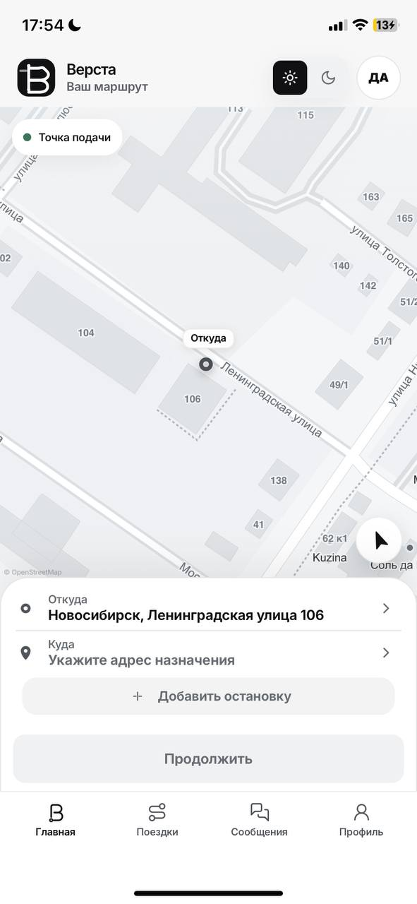
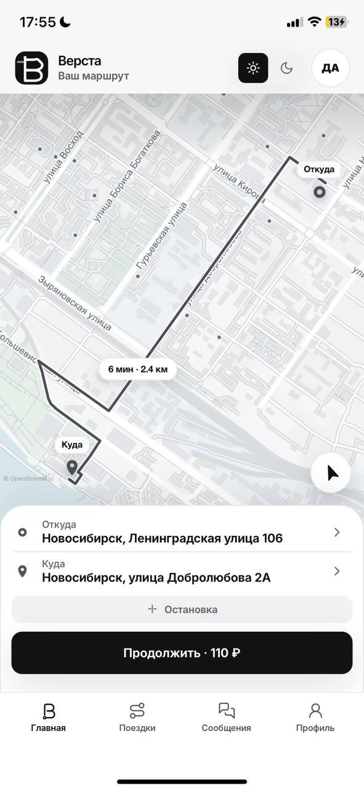
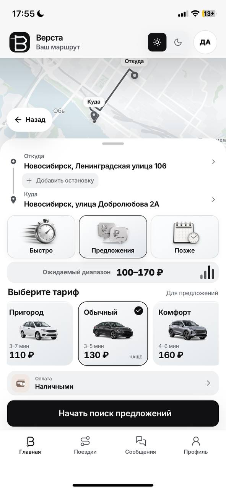

01PWA · Карты · Пассажирский сервис
Верста
Пассажирский сценарий от выбора маршрута и тарифа до готового заказа. Светлая карта и расчёт собраны в один понятный поток.
- Продуктовая структура
- UX/UI и адаптивность
- Разработка PWA